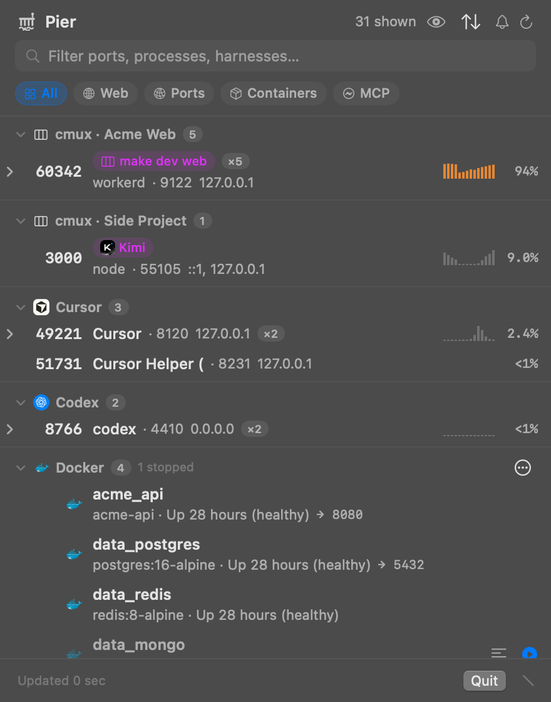

See what's running on your Mac — and who started it.
Pier lives in the menu bar and ties every listening port, container and MCP server back to the agent harness or terminal session that spawned it. Then it puts stop, kill and preview one click away.
Get Pier Read the docs
Everything on the water, one glance
Port 3000 is taken. Is it the thing you started, or something an agent left behind an hour ago?
⚓Listening ports
TCP and UDP listeners, deduplicated, grouped by owner, ranked by recent activity rather than a lucky idle moment.
🧭Agent attribution
Claude Code, Codex, Cursor, Kimi, OpenCode and more, plus cmux workspaces and the Ghostty or Terminal tab a server runs in.
📦Background activity
Docker and Apple container workloads (stopped ones too), booted simulators, and MCP servers, each with usage.
🔍Live context
CPU history, start/stop events, inline web previews pinned to the previewed host, and logs you can tail in place.
🌡System glance
RAM, swap, disk, thermal state and SMC temperatures. The icon tints when macOS reports memory pressure.
🛟Careful controls
Open, copy, start, stop, kill, prune. Destructive actions confirm first and name exactly what they remove.
How it knows
Bounded local probes, no daemon, no network calls to anyone.
lsof listeners ─┐ ps processes ───┼─> attribution ─> ports grouped by harness or cmux session cmux sessions ──┘ docker / container / simctl / MCP detection ─> activity sections
- Never trusts a CLI's own status. Engine state comes from a real API call, because
docker pscan exit 0 while the daemon is down. - Says why, once. A missing tool or stopped daemon degrades to an empty section with the reason in its header, not silence.
- Private by construction. No telemetry or update checks. The only thing written to disk is UI prefs and a 0600 log.
Install
Pier is built from source today. Signed, notarized downloads will show up on the right when they exist.
macOS 13+, Xcode 26+
git clone https://github.com/shaaaaawn/pier.git
cd pier
make build
open dist/Pier.appThe local build is ad-hoc signed; macOS may ask you to confirm the first launch. See Getting started.
Checking for the latest release…